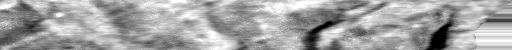

VESUVIUS / SCROLL 1 / EduceLab-Scrolls
Follow the sheet.
Verify every step.
One click, 50 slices. Inspect the tracked surface against released geometry, then carry the evidence forward.
01 / INSPECT
Inside the scroll
SLICE EVIDENCE—
within 2 voxels
- Mean distance
- —
- 95th percentile
- —
- Ridge proxy
- —
- Guard
- —
- Reference in crop
- —
Mesh lines appear only where the released surface intersects this slice and crop. Absence is not a correct trace.
Enable review mode and click a location to save a marker. Markers do not alter the trace or scores.
← → scrub slices · Space play/pause
02 / CHECK
Surface error over depth
Corrected PreviousClick chart to inspect
03 / UNROLL
The recovered geometry

Flattened CT intensity · vertical scale enlarged for inspectionGeometry preview only. This experiment does not demonstrate ink recovery or a new reading.
04 / REPRODUCE
Every claim has a source.
Review queue 0
Local correction proposals, kept separate from measured geometry.
What this establishes
Exact distance to released mesh triangles. Arc-length weighted measurements. The same frozen 50 slices before and after refinement.
What it does not
Complete layer labels, held-out accuracy, whole-scroll coverage, or recovered text. A close neighboring sheet is not proof of identity.
Background: Scroll 1 (PHerc. Paris. 4), CT slice 6100, EduceLab-Scrolls / Vesuvius Challenge, CC BY-NC 4.0. Teal: ten Unscroll SAM 3.1 traces from development clicks that stayed on the clicked layer.